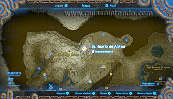
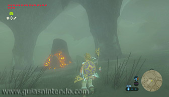
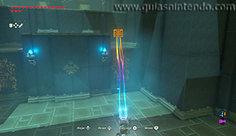
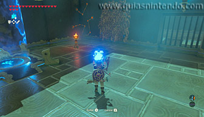
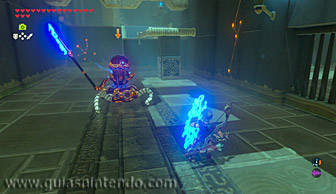
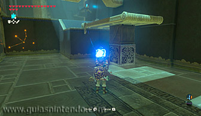
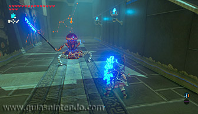
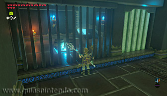
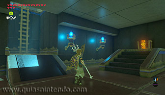
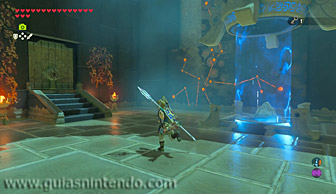

Se encuentra en la región de la torre de Hebra, al nordeste de la cordillera de Hebra (en la estepa de Arkpin).

En la primera estancia del santuario encontrarás un cofre en una zona elevada que hay al fondo a la derecha, el cual podrás coger con el módulo Imán. Dentro hallarás una Taladrarrocas.

Luego tendrás que destruir unas cajas que hay detrás de las enredaderas ubicadas a la izquierda de la entrada del santuario y así podrás atravesar la pared y llegar a una sala en la que hay un miniguardián 2.0 al que tendrás que eliminar.

Después deberás destruir una caja de madera que hay bajo una plataforma para formar una rampa por la que tendrás que subir para llegar hasta un corredor en el que hay otro miniguardián 2.0 al que también deberás eliminar.

En dicho corredor verás unas rejas tras las que hay un interruptor sobre el que hay unos barriles que deberás destruir con lanzas o flechas de fuego. De esa manera, el interruptor quedará libre y se abrirá una puerta tras la que encontrarás un cofre con una llave pequeña y una escalerilla.

Sube ahora por la escalerilla para regresar a la entrada del santuario y utiliza la llave que acabas de conseguir para abrir la puerta cerrada que hay a su derecha. Así podrás llegar hasta el altar y obtener un símbolo de valía.
